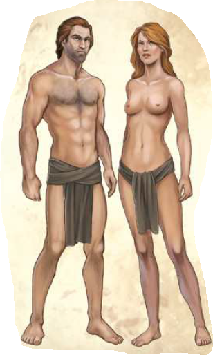

Die Menschen sind sie am weitesten verbreiteten Spezies auf Aventurien und haben sich am besten an alle möglichen Lebensräume angepasst, sei es an die brütende Schwüle des Südens oder an die frostige Kälte des Nordens.
Die Menschheit unterteilt sich in unterschiedliche Völker, die allesamt ihre Eigenarten haben. Vor allem unterscheiden sie sich durch eine Tatsache: Mittelländer und Thorwaler stammen ursprünglich aus dem fernen Myranor, Waldmenschen und Utulus kamen einst aus Uthuria nach Aventurien. Tulamiden und Nivesen hingegen sin aventurische Urvölker. Durch Vermischung oder Völkerwanderungen sind noch viele weitere Völker entstanden. So sind die Stammväter der vielgereisten Norbarden und der barbarische Ferkinas ursprünglich Tulamiden und die Fjarninger aus dem hohen Norden stammen wie die Thorwaler von den Hjaldigern aus dem Güldenland ab. In den Gjalskern, die im äuußersten Nordwesten des Kontinents leben, vereint sich das Erbe von Norbardenund Thorwalern, während man den hünenhaften Trollzackern nachsagt, dass sich das Tulamidenblut in ihren Adern mit dem der Trolle verbunden habe.
Die Mittelländer stellen unter den Menschen das größte Volk dar. Ihre Vorfahren stammen zwar aus dem Güldenland, doch wurden sie schnell auch in Aventurien das vorherrschende Menschenvolk. Die Mittelländer bilden den Großteil der Bevölkerung von Mittel- und Horasreich, des Svellttals, des Bornlandes, von Nostria und Andergast sowie vieler anderer Länder im tiefsten Süden und höchsten Norden. Die Hautfarbe der Mittelländer reicht von blässlich-weiß bis dunkelbraun. Eine Vielzahl von Augen- und Haarfarben sind möglich, allerdings dominieren braune und blonde Haartypen. Alle Größen, Physiognomien und Gemütslagen kommen vor.
Schon lange vor der Ankunft der Mittelländer gründeten die Tulamiden große Reiche in Aventurien, wie etwa das Diamantene Sultanat. Sie bewohnen die Länder des Südostens, von der Wüste Khôm über den Balash bis nach Aranien, aber auch Teile Meridianas und der Insel Maraskan, wo sie sich mit den Mittelländern vermischt haben. Mit den Tulamiden verwandt ist das barbarische Bergvolk der Ferkinas, das die Gebirgszüge zwischen mhanadistanischem Hochland und Raschtulswall bewohnt. Der Ton ihrer Haut- und Haarfarbe ist für gewöhnlich dunkler als der der Mittelländer und blondes Haar oder grüne Augen sind selten. Im Durchschnitt werden Tulamiden einige Jahre älter als Mittelländer. Den Nordwesten des Kontinents bevölkern die Thorwaler, kühne Seefahrer und wagemutige Entdecker. Auch sie stammen ursprünglich vom Westkontinent Myranor, wo noch heute ihre sagenhaften Vorfahren, die Hjaldinger, leben. Die Thorwaler tragen ihre häuig rot-blonde Haar- und Barttracht oft lang, sind von besonders großem Körperwuchs und gelten als robuster Menschenschlag.
Zu einem der ältesten Menschenvölker gehören die in der Tundra und Taiga umherziehenden Nivesen, ein Nomadenvolk. Sie leben wie eh und je in Sippenverbänden und durchwandern die nordaventurischen Steppen. Sie sind schlanker als die Mittelländer und etwas kleiner, besonders aber unterscheiden sie sich durch ihre leicht schräg gestellten mandelförmigen Augen und das meist kupferrote Haar von den güldenländischen Siedlern. Nivesen werden für gewöhnlich sehr alt, bis zu 120 Jahre hat man bei ihnen bereits gesehen, ein Umstand, auf den auch die Redewendung „ein nivesisches Alter erreichen“ anspielt.
Die Norbarden der nördlichen Geilde Aventuriens sind besonders als reisende Händler bekannt. Ihre Vorfahren, die Alhani, gründeten vor Jahrhunderten ein großes Reich, doch nachdem es immer wieder von Tulamiden und Mittelländern zerstört wurde, zerstreute sich das Volk der Norbarden in alle Winde. Die Norbarden sind etwas kleiner als die Mittelländer, haben eine dunklere Hautfarbe und meist schwarzes Haar, was sie ihrem tulamidischen Erbe verdanken. Unter Norbarden ist es Brauch, dass sich verheiratete Männer den Schädel kahl scheren und verheiratete Frauen den Scheitel ausrasieren.
Die übrigen Menschen unterscheiden in der Regel nicht zwischen den Waldmenschen und den Utulus und bezeichnen sie oft vereinheitlichend als Mohas. Die Waldmenschen sind kleiner und zierlicher als die Mittelländer, Utulus werden hingegen beinahe so groß wie die Thorwaler. Die Waldmenschen haben einen bronzenen Hautton, der in der Helligkeit variieren kann, die Haut der Utulus hingegen ist beinahe so dunkel wie Ebenholz. Utulus haben häuig krauses Haar, während das der Waldmenschen oftmals fein und glatt ist. Die ursprüngliche Heimat beider Menschenvölker liegt auf dem fernen Südkontinent Uthuria.
In den meisten aventurischen Kulturen sind die Geschlechter einander gleichgestellt und teilen sich die Aufgaben des Alltags, und viele Regionen kennen wackere Kriegerinnen, kühne Piratinnen und mächtige Magierinnen. Manche Männer führen schonmal ein Leben als Höling oder hüten Haus und Kinder, während ihre Frau auf Abenteuerfahrt auszieht. Je nach Region gibt es jedoch Ausnahmen von dieser Regel. So herrscht etwa in Andergast und in Teilen der Tulamidenlande ein strenges Patriarchat vor, während in Aranien meist Frauen höhere und gewichtige Positionen in Herrschaft, Handel und Militär bekleiden, während Männer sich gerne dem Müßiggang oder den schönen Künsten widmen.